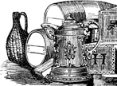

|  |
| |

Hempseed was regularly used in porridge, soups, and gruels by virtually all the peoples of the world up until this century. Monks were required to eat hempseed dishes three times a day, to weave their clothes of it, and to print their Bibles on paper made with its fiber.
(See Rubin, Dr. Vera, “Research Institute for the Study of Man;” Eastern Orthodox Church; Choen & Stillman, Therapeutic Potential of Marijuana, Plenum Press, 1976; Abel, Ernest, Marijuana, The First 12,000 Years, Plenum Press, NY, 1980; Encyclopedia Brittanica.)
Hempseed can be pressed for its highly nutritious vegetable oil, which contains the highest amount of essential fatty acids in the plant kingdom. These essential oils are responsible for our immune responses and clear the arteries of cholesterol and plaque.
The byproduct of pressing the oil from the seed is the highest quality protein seed cake. It can be sprouted (malted) or ground and baked into cake, breads, and casseroles. Marijuana seed protein is one of humankind’s finest, most complete, and available-to-the-body vegetable proteins. Hempseed is the most complete single food source for human nutrition. (See discussion of edistins and essential fatty acids, Chapter 8.)
Hempseed was—until the 1937 prohibition law—the world’s number-one bird seed, for both wild and domestic birds. It was their favorite* of any seed food on the planet; four millions pounds of hemp seed for songbirds were sold at retail in the U.S. in 1937. Birds will pick hemp seeds out and eat them first from a pile of mixed seed. Birds in the wild live longer and breed more with hemp seed in their diet, using the oil for their feathers and their overall health. (More in chapter 8, “Hemp as a Basic World Food.”)
* Congressional testimony, 1937: “Song birds won’t sing without it,” the bird food companies told Congress. Result: sterilized cannabis seeds continue to be imported into the U.S. from Italy, China, and other countries.
Hempseed produces no observable high for humans or birds. Only the most minute traces of THC are in the seed. Hempseed is also the favorite fish bait in Europe. Anglers buy pecks of hempseed at bait stores, then throw handfuls into rivers and ponds. Fish come thrashing for the hempseed and are caught by hook. No other chum is as effective, making hempseed generally the most desireable and most nutritious food for humans, birds, and fish. (Jack Herer’s personal research in Europe.)
(Frazier, Jack, The Marijuana Farmers, Solar Age Press, New Orleans, LA, 1972)
See also Chapter 8: Hempseed as the Basic World Food
the authorized on-line version of Jack Herer’s “The Emperor Wears No Clothes”
| previous page | Chapter 2 | next page |
|
 |
 |
 |
 |